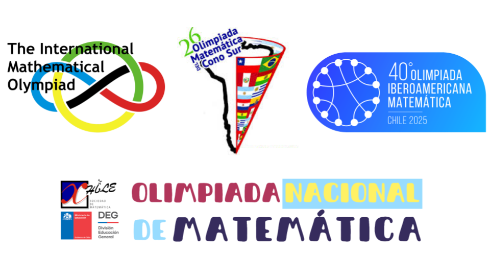
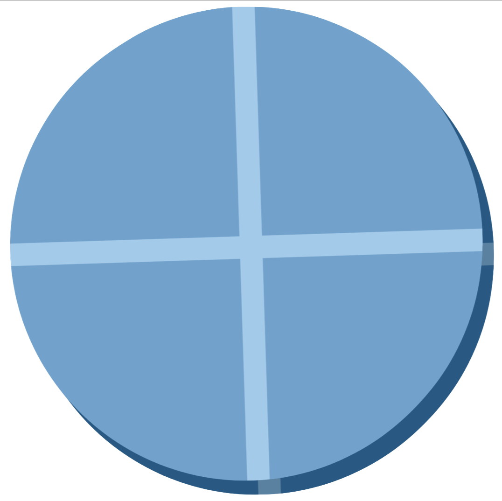

Belleza en matemáticas


De lo imposible a lo evidente
- Asombro → “¿Cómo puede ser cierto?”
- Método → Aplicamos reglas simples y lógica.
- Claridad → Lo que parecía magia se vuelve obvio.
- Belleza → Descubrimos el placer de comprender.

Suma de Gauss
Problema: \[
1 + 2 + 3 + \cdots + n
\]
Escribe la suma dos vecesde la forma: \[ S = 1+2+\cdots+(n-1)+n \] \[ S = n+(n-1)+\cdots+2+1 \]
\[\Rightarrow 2S = (n+1) + (n+1) + \cdots + (n+1)\]
\(\Rightarrow 2S = n(n+1)\)
\[ \displaystyle S = \frac{n(n+1)}{2}\]

Suma de Gauss

¿ números impares y los cuadrados?

¿ números impares y los cuadrados?
\[ 1 + 3 + 5 + \dots + (2n-1) = n^2 \]
- Ejemplos: \(1=1\), \(1+3=4\), \(1+3+5=9\), …
- Para \(n\) se cumple, …. se cumplirá para \(n+1\)?
\[ 1 + 3 + 5 + \cdots + (2n-1) + (2n+1) \]
\[ = n^2 + (2n+1) \]
\[ = n^2 + 2n + 1 \]
\[ = (n+1)^2 \]
Qué son las Olimpiadas
- Competencias de ingenio y creatividad.
- Problemas simples en apariencia, profundos en ideas.
- A nivel local, nacional e internacional (IMO).
- Inició en 1959 en Rumanía (7 países).
- Hoy reúne a más de 100 países.
- Competencia más prestigiosa en el mundo.
- Inició en 1959 en Rumanía (7 países).

El profesor Pawel Kröger de la USM fue medallista en la IMO: oro en 1972 y plata en 1973.
Ejemplos de Olimpiadas


Conceptos Claves

Conjetura
Afirmación que parece cierta, falta demostrar.
Ej: Goldbach (todo par > 2 es suma de dos primos)
Hipótesis
Suposición precisa pero sin prueba.
Ej: Hipótesis de Riemann (sobre los números primos)

Problema abierto
Gran pregunta sin respuesta aún.
Ej: P vs NP (resolver rápido = verificar rápido?)
¿Cómo nos apoya la computación?
Explora masivamente millones de casos rápido.
Detecta patrones en tablas, gráficos y relaciones.
Encuentra contraejemplos con facilidad.
Prototipa ideas: del código a la evidencia en minutos.

Veamos ejemplos en problemas abiertos (y casi abiertos).
Aprendizajes

La matemática es arte
Cada demostración descubre la belleza escondida en los números.

Olimpiadas de matemáticas
Despiertan ingenio y fortalecen el razonamiento creativo.

Problemas Abiertos
Las matemáticas guardan misterios sin resolver.

Disfrutar el proceso
Explorar, equivocarse y asombrarse es parte de aprender a pensar.